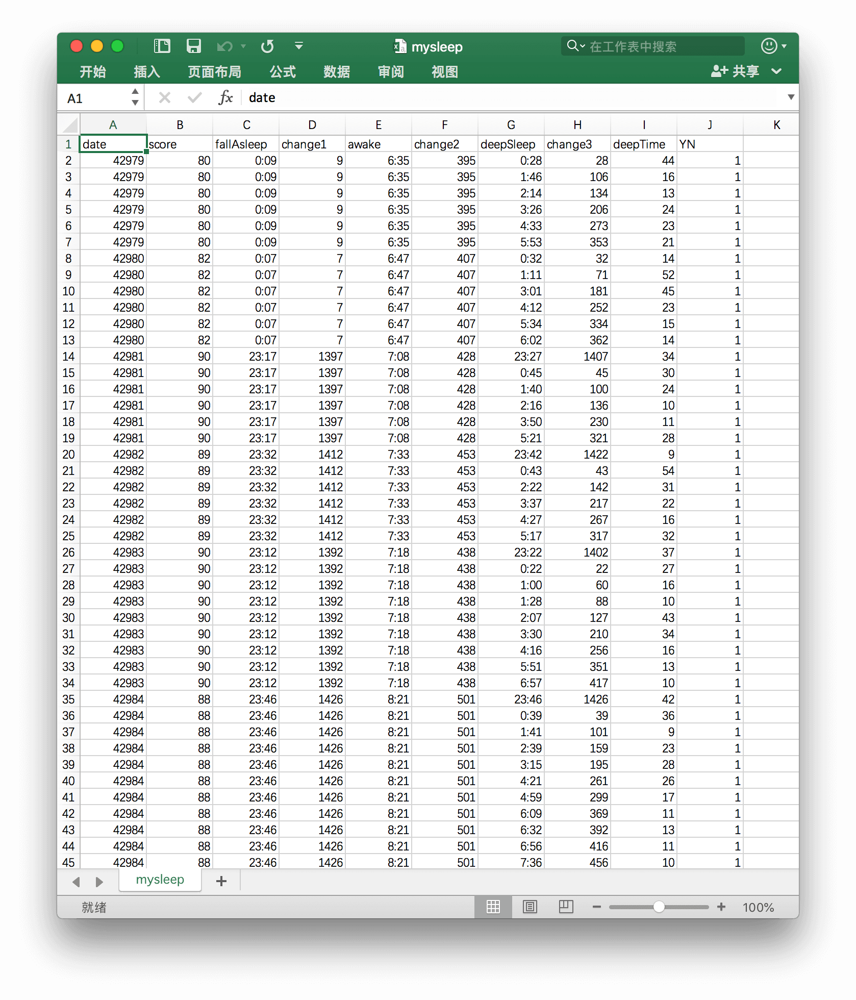
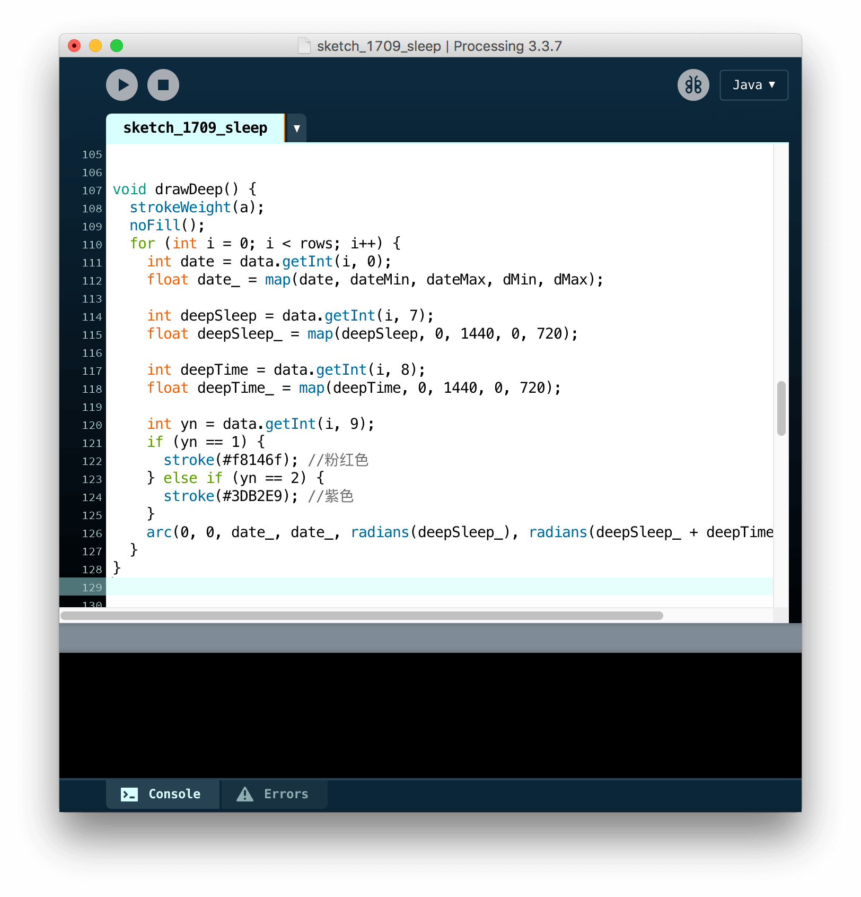
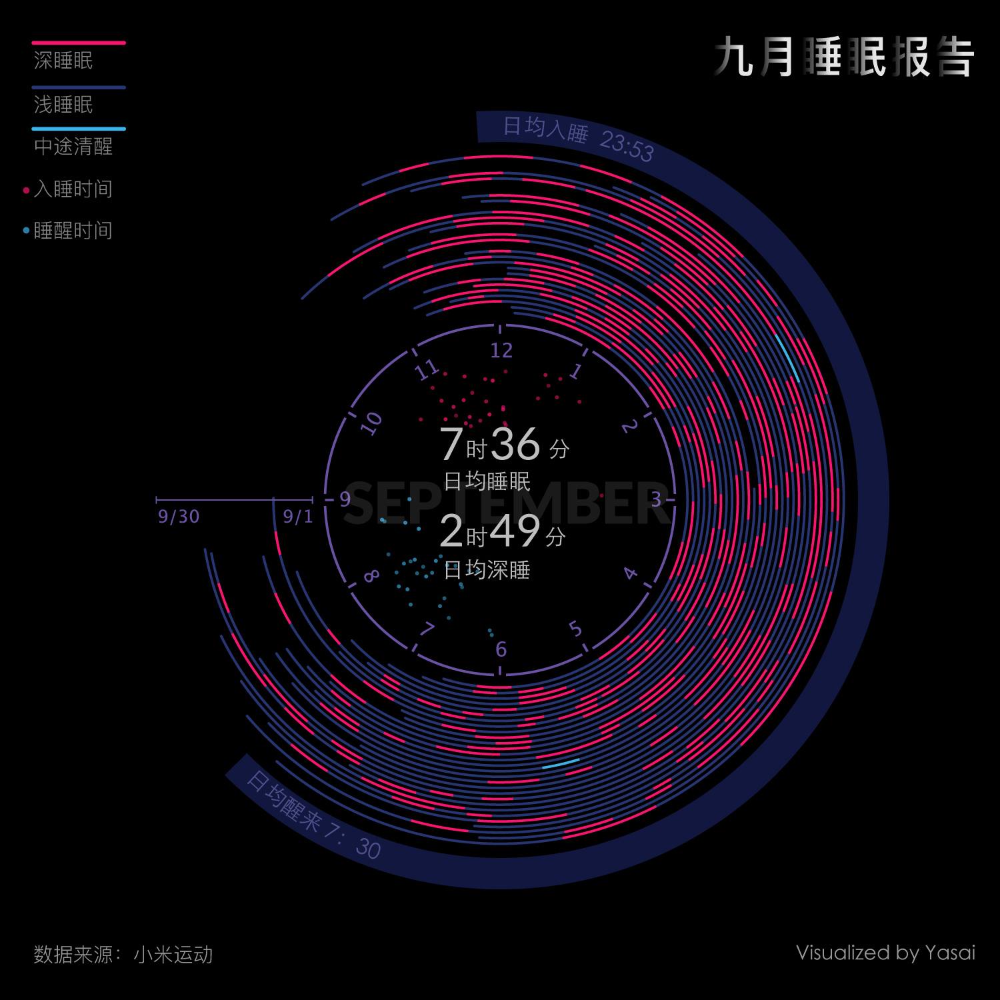

第一个个人数据报告,这个受邱俊涛老师的一篇文章 一张漂亮的可视化图表背后的启发，用废弃了好久的小米手环重新记录个人睡眠数据，制作出的一张个人数据可视化报告。
小米手环中有多种维度的睡眠数据。它根据人是否进行大幅度的运动，分为深睡眠、浅睡眠和清醒三个睡眠状态。通常晚上起来上厕所会被判定成清醒。
记录每天的睡眠情况，把数据整理。第一列是日期，我在excel里面直接换算成数字的格式，方面在代码里运行。第三列和第五列是入睡时间和醒来时间，我在第四列和第六列转化为分钟。第七列是深度睡眠的开始的时间，同样，第八列把这个时间转化为分钟的数字。最后一列是深度睡眠大概经过几分钟。
如何把睡眠时间转化为弧形呈现呢？邱老师用的是d3.js写的，我用我比较熟悉的processing去写。主要运用到了processing的基础图形：arc()去呈现。
在颜色选择上面，我把浅睡眠弱化，选择比较接近背景的紫色，把深度睡眠用粉色表示，对比的清醒状态用蓝色表示。
最后生成一个手表的效果，从内到外是2017/9/1到2017/9/30的睡眠情况。入睡时间主要分布在23:00-24:00，醒来时间主要分布在7:00-8:00；日均入睡时间在23:53，日均醒来时间在7:3，可以看到本大人几乎就没有睡超过9点以后。